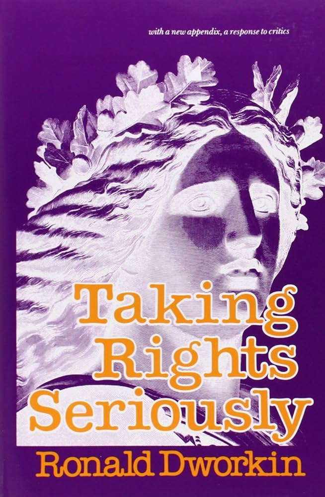
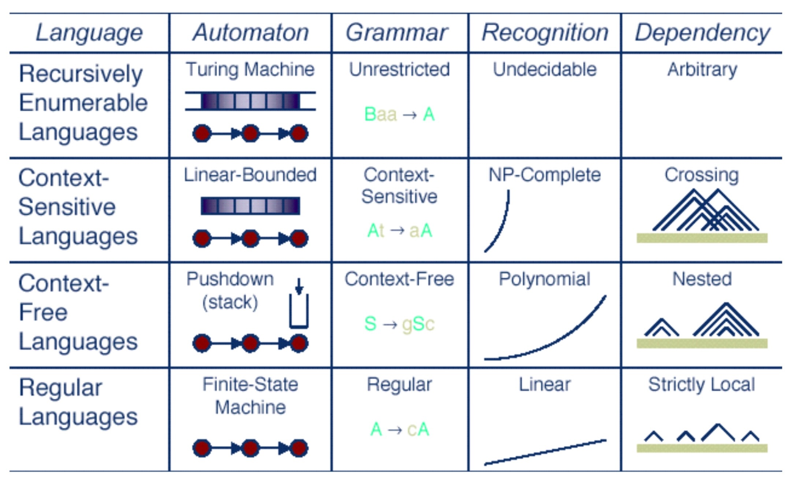

Week 3: Ethical Frameworks, Rights, and Discrimination
DSAN 5450: Data Ethics and Policy
Spring 2025, Georgetown University
Schedule
Today’s Planned Schedule:
| Start | End | Topic | |
|---|---|---|---|
| Lecture | 3:30pm | 3:40pm | TA Intros! |
| 3:40pm | 4:00pm | Training Data = Human Labor → | |
| 4:00pm | 4:30pm | Metaethics → | |
| 4:30pm | 5:00pm | Individual \(\leadsto\) Social Ethics → | |
| Break! | 5:00pm | 5:10pm | |
| 5:10pm | 6:00pm | Game Theory! → |
Recap / Loose Ends
Loose Ends
- Normative vs. Descriptive “Exploitation”: How can we disentangle these in our understanding of the term? (Roemer 1988)
- Under descriptive definition, one can “exploit†corn or land in the exact same way one “exploits†human labor (just another type of input into the production process)
- Utility-wise, an economy with exploitation can be unambiguously better than one without exploitation: if 10 people \(H\) own means of production, and 990 people \(S\) own only their labor power (landless peasants, for example), allowing \(H\) to exploit \(S\) for a wage increases utility for both: \(H\) acquires profits, \(S\) doesn’t starve to death
- “Tracing back†causes / unraveling history
- “The result [of modern 24-hour news cycles] is a litany of events with no beginning and no real end, thrown together only because they occurred at the same time[,] cut off from their antecedents and consequenes†(Bourdieu 2010)
(Recap) Three Component Parts of Machine Learning
- A cool algorithm ✅
- [Possibly benign but possibly biased] Training data ✅
- \(\Longrightarrow\) Exploitation of below-minimum-wage human labor 😞🤐 (Dube et al. 2020)
Part 3: The “Training Data Bottleneck”


With so much technical progress […] why is there so little real enterprise success? The answer all too often is that many enterprises continue to be bottlenecked by one key ingredient: the large amounts of labeled data [needed] to train these new systems.
Human Labor

Computer Scientists Being Responsible (At Georgetown!)

- (PS… UMD undergrad CS class of 2013 extremely overrepresented here 😜 go Terps)
So, What Comes With Human Labels? Human Biases!

Biases In Our Brains \(\rightarrow\) Biases in Our Models \(\rightarrow\) Material Effects
- “Reification”: Pretentious word for an important phenomenon, whereby talking about something (e.g., race) as if it was real ends up leading to it becoming real (having real impacts on people’s lives)1
On average, being classified as a White man as opposed to a Coloured man would have more than quadrupled a person’s income. (Pellicer and Ranchhod 2023)

Reification in Science
- Goodhart’s Law: “When a measure becomes a target, it ceases to be a good measure”
- Cat-and-mouse game between goals (🚩) and ways of measuring progress towards goals (also 🚩)
Metaethics
A scary-sounding word that just means:
“What we talk about when we talk about ethics”,
in contrast to
“What we talk about when we talk about [insert particular ethical framework here]”
Reflective Equilibrium
- Most criticisms of any framework boil down to, “great in theory, but doesn’t work in practice”
- The way to take this seriously: reflective equilibrium
- Introduced by Rawls (1951), but popularized by Rawls (1971)

Descriptive vs. Normative Judgements
| Descriptive (Is) | Normative (Ought) |
|---|---|
| Grass is green (true) | Grass ought to be green (?) |
| Grass is blue (false) | Grass ought to be blue (?) |
Easy Mode: Descriptive Judgements
How did you acquire the concept “red�
- People pointed to stuff with certain properties and said “red†(or “rojo†or “红â€), as pieces of an intersubjective communication system
- These descriptive labels enable coordination, like driving on left or right side of road!
- Nothing very profound or difficult in committing to this descriptive coordination: “for ease of communication, I’ll vibrate my vocal chords like this (or write these symbols) to indicate \(x\), and vibrate them like this (or write these other symbols) to indicate \(y\)”
- Linguistic choices, when it comes to description, are arbitrary*: Our mouths can make these sounds, and each language is a mapping: [combinations of sounds] \(\leftrightarrow\) [things]
- diːsˈæn ˈfɪfti fɔr ˈfɪfti US Accent / Icelandic Accent
*(Tiny text footnote: Except for, perhaps, a few fun but rare onomatopoetic cases)
What Makes Ethical Judgements “More Difficult�
How did you acquire the concept “good�
- People pointed to actions with certain properties and said “good†(and pointed at others and said “bad”), as part of instilling values in you
- “Grass is green†just links two descriptive referents together, while “Honesty is good†takes the descriptive concept “honesty†and links it with the normative concept “good”
- In doing this, parents/teachers/friends are doing way more than just linking sounds and things in the world (describing): they are also prescribing rules of moral conduct!
- Normative concepts go beyond “mere†communication: course of your life / future / [things that matter deeply to people] differ if you act on one set of norms vs. another
- \(\implies\) Ethics centrally involves non-arbitrarily-chosen commitments!
Tl;dr
- Languages are arbitrary conventions for communication
- Ethical systems build on this language to non-arbitrarily mark out things that are good/bad
- Society wouldn’t be too different if we “shuffled†words (we’d just vibrate our vocal chords differently), but would be very different if we “shuffled†good/bad labeling

Quick Aside: Top 10 Linguist Beefs
- Statement on previous slide (“Life would not be very different if we shuffled words”), might seem weird/closed-minded/dismissive if you have a certain popular prior belief…
The Last Time I Use This, I Promise

Historical Example: Capitalism and the “Protestant Ethic”
- Big changes in history are associated with changes in this good/bad labeling!
- Max Weber (second most-cited sociologist of all time*): Protestant value system gave rise to capitalist system by relabeling what things are good vs. bad (Weber 1904):
Jesus said to his disciples, “Truly, I say to you, only with difficulty will a rich person enter the kingdom of heaven. Again I tell you, it is easier for a camel to go through the eye of a needle than for a rich person to enter the kingdom of God.†(Matthew 19:23-24)
Oh, were we loving God worthily, we should have no love at all for money! (St. Augustine 1874, pg. 28)
*(…jumpscare: REIFICATION!)
The earliest capitalists lacked legitimacy in the moral climate in which they found themselves. One of the means they found [to legitimize their behavior] was to appropriate the evaluative vocabulary of Protestantism. (Skinner 2012, pg. 157)
Calvinism added [to Luther’s doctrine] the necessity of proving one’s faith in worldly activity, [replacing] spiritual aristocracy of monks outside of/above the world with spiritual aristocracy of predestined saints within it. (pg. 121).
Aggressively Tossing Books at Your Head
- (Reminder that there are no required readings, but that this means you should pick a few which seem mildly interesting to you and try them out, as first step towards final paper lit review! 😉)
- Also, we’ll be bringing this Hirschman guy back into the mix when we get to policy: specifically, his earlier book, Exit, Voice, and Loyalty (Hirschman 1970)
Contemporary Example: Palestine
- Very few of the relevant empirical facts are in dispute, since opening of crucial archives to three so-called “New Historians†in the 1980s. So why do people still argue?
- Ilan Pappe, one of these historians, concluded from this material that:
- The Israeli state was built upon a massive ethnic cleansing, and
- Is not morally justifiable (Pappe 2006)
The immunity Israel has received over the last fifty years encourages others, regimes and oppositions alike, to believe that human and civil rights are irrelevant in the Middle East. The dismantling of the mega-prison in Palestine will send a different, and more hopeful, message.
- Benny Morris, another of these historians, concluded that:
- The Israeli state was built upon a massive ethnic cleansing, and
- Is morally justifiable (Morris 1987)
A Jewish state would not have come into being without the uprooting of 700,000 Palestinians. Therefore it was necessary to uproot them. There was no choice but to expel that population. It was necessary to cleanse the hinterland and cleanse the border areas and cleanse the main roads.
Individual Ethics \(\rightarrow\) Social Ethics
Standard Counterargument to Consequentialism
Millions are kept permanently happy, on the one simple condition that a certain lost soul on the far-off edge of things should lead a life of lonely torture (James 1891)
- Modern example: people “out there†suffer so we can have iPhones, etc.
One Solution: Individual Rights
- Rights are vetoes which individuals can use to cancel out collective/institutional decisions which affect them (key example for us: right to privacy)
- Rawls/liberalism: individual rights are lexically prior to “efficiency†and/or distributional concerns
- Why the buzzword “lexically� Enter (non-scary) math!
- We can put lowercase letters of English alphabet in an order: \(\texttt{a} \prec \texttt{b} \prec \cdots \texttt{z}\)
- We can put capital letters of English alphabet in an order: \(\texttt{A} \prec \texttt{B} \prec \cdots \prec \texttt{Z}\)
- What if we need to sort stuff with both types? We can decide that capital letters are lexically prior to lowercase letters, giving us a combined ordering:

\[ \boxed{\texttt{A} \prec \texttt{B} \prec \cdots \prec \texttt{Z} \prec \texttt{a} \prec \texttt{b} \prec \cdots \prec \texttt{z}} \]
Lexical Ordering (I Tricked You 😈)
- You thought I was just talking about letters, but they’re actually variables: capital letters are rights, lowercase letters are distributive principles
\[ \underbrace{\texttt{A} \prec \texttt{B} \prec \cdots \prec \texttt{Z}}_{\mathclap{\substack{\text{Individual Rights} \\ \text{Basic Goods}}}} \phantom{\prec} \prec \phantom{\prec} \underbrace{\texttt{a} \prec \texttt{b} \prec \cdots \prec \texttt{z}}_{\mathclap{\substack{\text{Distributive Principles} \\ \text{Money and whatnot}}}} \]
Better Metaphor Than Letters
- Letters are where Rawls gets “lexically prior†from, but letters are total orderings (we know where every letter “stands†in relation to every other letter)
- Better metaphor: a high school with a hierarchy such that
\[ \text{Seniors} \prec \text{Juniors} \prec \text{Sophomores} \prec \text{Freshmen} \]
- \(\implies\) If you’re a Freshman, whether at the “top†or “bottom†of a ranking of Freshmen, you’re still prior to all Sophomores…
- Why is this more helpful? Because we don’t need to define the rankings within classes to know the rankings between classes in this case

Counterargument(s) to Deontology
- Deontological rule: “Don’t lie”
- But then: Nazis come to your house, ask you if you’re harboring any Jews
- k, new deontological rule: “Don’t lie unless necessary”
- Who decides when it’s necessary?
- Deontological commitment: Pacifism / Nonviolence
- But then: someone swingin on you
- k, new deontological commitment: Pacifism / Nonviolence Except In Self-Defense
- Who decides what counts as self-defense?
- (Trolley problems, etc.)
A Synthesis: Two-Level Utilitarianism
- It would be exhausting to compute Nash equilibrium strategies for every scenario
- Instead, we can develop heuristics that work for most cases, then reevaluate and update when we encounter tough cases
- (Brings us back to reflective equilibrium!)

Enter Game Theory
- A tool for analyzing how individual choices + choices of others \(\rightarrow\) outcomes!
- Example: You (\(A\)) and a friend (\(B\)) committed a robbery, and you’re brought into the police station for questioning.
- You’re placed in separate rooms, and each of you is offered a plea deal: if you testify while your partner stays silent, you go free and they go to jail for 3 years.
- Otherwise, if you both stay silent, they have very little evidence and can only jail you for 1 year
- However, there’s a catch: if you both confess, you both get two years in jail, since they now have maximal evidence
Individual Decision-Making
- Let’s think through \(A\)’s best responses to the possible choices \(B\) could make:
- If \(B\) stays silent, what is \(A\)’s best option?
- Staying silent results in 1 year of jail
- Testifying results in 0 years of jail
- So it is better to testify
- If \(B\) testifies, what is \(A\)’s best option?
- Staying silent results in 3 years of jail
- Testifying results in 2 years of jail
- So it is better to testify
- The result: regardless of what \(B\) does, \(A\) is better off testifying!
How Do We Fix This? Conventions!
- We encounter this type of problem every day if we drive! You (\(A\)) and another driver (\(B\)) arrive at an intersection:
| \(B\) | |||
| Stop | Drive | ||
| \(A\) | Stop | \(-1,-1\) | \(-3,\phantom{-}0\) |
| Drive | \(\phantom{-}0, -3\) | \(-10,-10\) | |
- If both stop, we’re mostly bored: \(u_A = -1\)
- If we stop and the other person drives, we’re mad that they got to go and we didn’t: \(u_A = -3\)
- If both drive, we crash: \(u_A = -10\)
Without A Convention
- We’re “frozen”: this game has no unique Nash equilibrium, so we cannot say (on the basis of individual rationality) what will happen!
- Without a convention: power/aggression takes over. “War of all against all”, only the strong survive, etc. (life is “nasty, brutish, and short”)
| \(B\) | |||
| Stop | Drive | ||
| \(A\) | Stop | \({\color{orange}\cancel{\color{black}-1}},{\color{lightblue}\cancel{\color{black}-1}}\) | \(\boxed{-3},\boxed{0}\) |
| Drive | \(\boxed{0}, \boxed{-3}\) | \({\color{orange}\cancel{\color{black}-10}},{\color{lightblue}\cancel{\color{black}-10}}\) | |
- If \(A\)’s aggression is \(\Pr(s_A = \textsf{Drive}) = X \sim \mathcal{U}[0,1]\), \(B\)’s aggression is \(\Pr(s_B = \textsf{Drive}) = Y \sim \mathcal{U}[0,1]\), what happens at individual and societal levels?
\[ \begin{align*} \mathbb{E}[u_A] = \mathbb{E}[u_B] &= \int_{0}^{1}\int_{0}^{1}\left(x - 2y -8xy - 1\right)dy \, dx = -3.5 \\ \underbrace{\mathbb{E}\mkern-3mu\left[u_A + u_B\right]}_{\mathclap{\text{Utilitarian Social Welfare}}} &= -3.5 \end{align*} \]
The Convention of Traffic Lights
- If we don’t want a world where \(\text{Happiness}(i) \propto \Pr(i \text{ more aggro than }j)\), we can introduce traffic lights:
- Now in “correlated equilibrium”, where we ensure* coordinated \(\Pr((\textsf{Drive}, \textsf{Stop})) = 0.5\), \(\Pr((\textsf{Stop}, \textsf{Drive})) = 0.5\)
- \(\mathbb{E}[u_A] = (0.5)(0) + (0.5)(-3) = -1.5\)
- \(\mathbb{E}[u_B] = (0.5)(-3) + (0.5)(0) = -1.5\)
| \(B\) | |||
| Stop | Drive | ||
| \(A\) | Stop | \({\color{orange}\cancel{\color{black}-1}},{\color{lightblue}\cancel{\color{black}-1}}\) | \(\boxed{-3},\boxed{0}\) |
| Drive | \(\boxed{0}, \boxed{-3}\) | \({\color{orange}\cancel{\color{black}-10}},{\color{lightblue}\cancel{\color{black}-10}}\) | |
- Empirical (anthropological) findings across literally thousands of different cultures throughout the world: people are willing to give up rewards to ensure fairness (see, e.g., Henrich et al. (2001))
*(through, for example, traffic laws: equal in theory… In practice? Another story)
So How Should We Make/Choose Conventions?
- Hobbes (1668): Only way out of “war of all against all†is to surrender all power to one sovereign (the Leviathan)
- Rousseau (1762): Social contract
- [Big big ~200 year gap here… can you think of why? Hint: French Revolution in 1789]
- Rawls (1971): Social contract behind the “veil of ignorance”
- If we didn’t know where we were going to end up in society, how would we set it up?
Rawls’ Veil of Ignorance
- Probably the most important tool for policy whitepapers!
- “Justice as fairness†(next week: fairness in AI 😜)
- We don’t know whether we’ll be \(A\) or \(B\) in the intersection game, so we’d choose the traffic light!
- More profoundly: We don’t know what race, gender, class, ethnicity, sexuality, disability status we’ll have; We don’t know whether we’ll be Israeli or Palestinian; we don’t know whether we’ll own means of production or own only our labor power (and thus have to sell it on a market to survive)… 🤔
Nuts and Bolts for Fairness
One Final Reminder
- Industry rule #4080: Cannot “prove†\(q(x) = \text{``Algorithm }x\text{ is fair''}\)! Only \(p(x) \implies q(y)\):
\[ \underbrace{p(x)}_{\substack{\text{Accept ethical} \\ \text{framework }x}} \implies \underbrace{q(y)}_{\substack{\text{Algorithms should} \\ \text{satisfy condition }y}} \]
- Before: possible ethical frameworks (values for \(x\))
- Now: possible fairness criteria (values for \(y\))
Categories of Fairness Criteria
Roughly, approaches to fairness/bias in AI can be categorized as follows:
- Single-Threshold Fairness
- Equal Prediction
- Equal Decision
- Fairness via Similarity Metric(s)
- Causal Definitions
- [Today] Context-Free Fairness: Easier to grasp from CS/data science perspective; rooted in “language†of Machine Learning (you already know much of it, given DSAN 5000!)
- But easy-to-grasp notion \(\neq\) “good†notion!
- Your job: push yourself to (a) consider what is getting left out of the context-free definitions, and (b) the loopholes that are thus introduced into them, whereby people/computers can discriminate while remaining “technically fair”
Laws: Often Perfectly “Technically Fair”
Ah, la majestueuse égalité des lois, qui interdit au riche comme au pauvre de coucher sous les ponts, de mendier dans les rues et de voler du pain!
(Ah, the majestic equality of the law, which prohibits rich and poor alike from sleeping under bridges, begging in the streets, and stealing loaves of bread!)
Anatole France, Le Lys Rouge (France 1894)
Context-Free Fairness

The Brogrammer’s Criterion
df.drop(columns=["race"], inplace=True)- Racism solved, folks! 🥳🎊🎉 End of the course, have a great rest of your data science career ✌️
(No) Fairness Through Unawareness
- HW1: Using tiny sample (\(N < 10K\)) of Florida voter registrations… RandomForestClassifier (default settings, no hyperparameter tuning, no cross-validation, no ensembling with other methods) will predict self-reported race with \(>90\%\) accuracy (in balanced sample) from just surname and county of residence
- Can reach \(70\text{-}75\%\) with just surname or just county of residence
- Also in HW1: Facebook ad matching service provides over 1,000 different user attributes for (micro)targeting
To Make It Even More Concrete…
- Bloomberg analysis of neighborhoods with same-day delivery from Amazon:


We Can Do (A Bit) Better…
- Use random variables to model inferences made by an algorithm (or a human!)
- \(\implies\) fairness by statistically equalizing loan rejections, error rate, etc. between groups
- Obvious societal drawback: equality does not ameliorate the effects of past injustices (see: police contact vs. trust-in-government plot from last week)
- This one we saw coming, given “context-free†nature!
- Less obvious mathematical drawback: impossibility results (because algebra 😳)
- Roughly: can’t satisfy [more than] two statistical fairness criteria at once; similar to how setting \(\Pr(X) = p\) also determines \(\Pr(\text{not }X) = 1 - p\), or how plugging \(x = 3\) into \(x + y = 5\) leaves only one possibility \(y = 2\)
- BUT, “impossibility†\(\neq\) impossibility: (a) one criteria may be “all you need†in given setting; (b) can derive more robust measures by “relaxing†confusion-matrix measures
What the Fairness Measures Will Feel Like For Now
- (They will get more robust and will incorporate context soon, I promise!)
Who Remembers… 🎉Confusion Matrices!!!🎉
- Terrifyingly higher stakes than in DSAN 5000, however!
- Now \(D = 1\) could literally mean “shoot this person†or “throw this person in jail for life”

Our First Fairness Measure (Finally)!
- Standard across the literature: Random Variable \(A_i\) “encoding†membership in protected/sensitive group. In HW1, for example:
\[ A_i = \begin{cases} 0 &\text{if }i\text{ self-reported ``white''} \\ 1 &\text{if }i\text{ self-reported ``black''} \end{cases} \]
Notice: choice of mapping into \(\{0, 1\}\) here non-arbitrary!
We want our models/criteria to be descriptively but also normatively robust; e.g.:
If (antecedent I hold, though majority in US do not) one believes that ending (much less repairing) centuries of unrelenting white supremacist violence here might require asymmetric race-based policies,
Then our model should allow different normative labels and differential weights on
\[ \begin{align*} \Delta &= (\text{Fairness} \mid A = 1) - (\text{Fairness} \mid A = 0) \\ \nabla &= (\text{Fairness} \mid A = 0) - (\text{Fairness} \mid A = 1) \end{align*} \]
despite the descriptive fact that \(\Delta = -\nabla\).
Where Descriptive and Normative Become Intertwined
- Allowing this asymmetry is precisely what enables bring descriptive facts to bear on normative concerns!
- Mathematically we can always “flip†the mapping from racial labels into \(\{0, 1\}\)…
- But this (in a precise, mathematical sense: namely, isomorphism) implies that we’re treating racial categorization as the same type of phenomenon as driving on left or right side of road (see: prev slides on why we make the descriptive vs. normative distinction)
- (See also: Sweden’s Dagen H!)
“Fairness†Through Equalized Positive Rates
\[ \Pr(D = 1 \mid A = 0) = \Pr(D = 1 \mid A = 1) \]
- This works specifically for discrete, binary-valued categories
- For general attributes (whether discrete or continuous!), generalizes to:
\[ D \perp A \iff \Pr(D = d, A = a) = \Pr(D = d)\Pr(A = a) \]
“Fairness†Through Equalized Error Rates
- Equalized False Positive Rate:
\[ \Pr(D = 1 \mid Y = 0, A = 0) = \Pr(D = 1 \mid Y = 0, A = 1) \]
- Equalized False Negative Rate:
\[ \Pr(D = 0 \mid Y = 1, A = 0) = \Pr(D = 0 \mid Y = 1, A = 1) \]
- For general (non-binary) attributes: \((D \perp A) \mid Y\):
\[ \Pr(D = d, A = a \mid Y = y) = \Pr(D = d \mid Y = y)\Pr(A = a \mid Y = y) \]
NO MORE EQUATIONS! 😤
- Depending on your background and/or learning style (say, visual vs. auditory), you may be able to look at equations on previous slides and “see†what they’re “saying”
- If your brain works similarly to mine, however, your eyes glazed over, you began dissociating, planning an escape route, looking for open ventilation ducts, etc.
- If you’re in the latter group, welcome to the cult of Probabilistic Graphical Models 😈
Baby Steps: A Real-World Confusion Matrix
| Labeled Low-Risk | Labeled High-Risk | |
|---|---|---|
| Didn’t Do More Crimes | True Negative | False Positive |
| Did More Crimes | False Negative | True Positive |
- What kinds of causal connections and/or feedback loops might there be between our decision variable (low vs. high risk) and our outcome variable (did vs. didn’t do more crimes)
- What types of policy implications might this process have, after it “runs†for several “iterations�
- Why might some segments of society, with some shared ethical framework(s), weigh the “costs†of false negatives and false positives differently from other segments of society with different shared ethical framework(s)?
- (Non-rhetorical questions!)